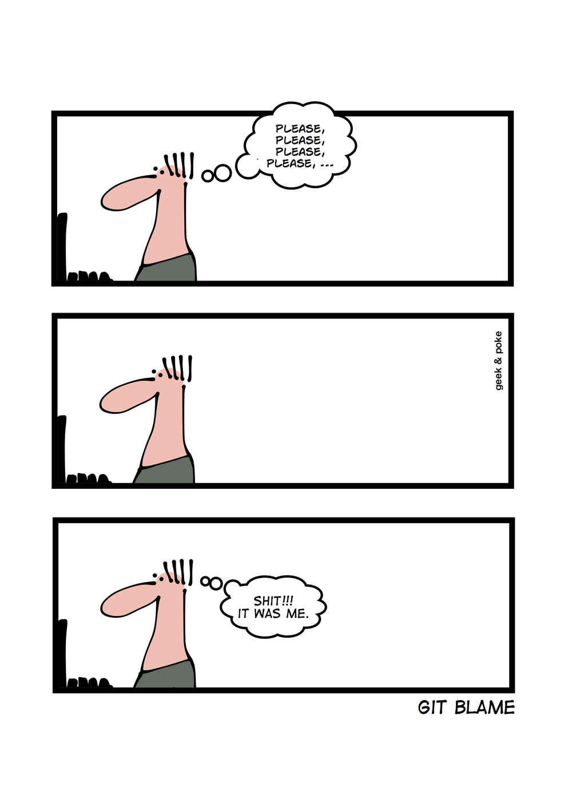
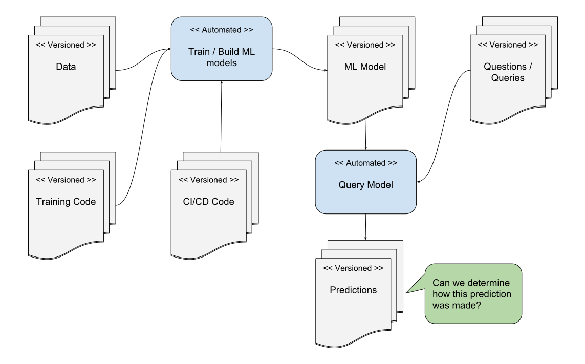

I give no warranties to anything in these slides.
### Intro
### Some concepts to keep in mind | | | | ------------- | ------------- | | History | A record. | | Lineage | Line of descent from an ancestor. | | Provenance | Place or source of origin. |
Every human and/or automated process should concerned with: - Recording the history of each change to our code base and data sources - Recoding the lineage of every each asset we produce - Making it easy to trace the provenance of our assets
Behave like: - You may have to recreate all assets from scratch; or - You may get auditted at any second - by clients - by you future self/co-worker - by your boss - by the government
## Why History?
We often want to look back at work as it was at a specific point in time. The more messages/metadata we associate with each small unit of work the easier it will be to understand in the future.
#### How git helps? Every _commit_ to the git repo can have a short message and a long description associated with it. Think of them as notes to you future self or future co-workers.
This happens more often than I'd like to admit 
For example: A comment by a project a collaborator: _*This looks cool as hell; could you add a comment explaining what this is doing?*_ Caused me to rework the code and commit it with: <pre><code class="shell"> commit abc2d8532489b173e0428feae40cf0f11dbf7cad Author: Tom Marks Date: Sat May 26 07:13:53 2018 -0400 Attempts to make clever code more readable </code></pre>
It's not a great commit message. But hopefully contains the motivation for the code changes.
Linus Torvald, the creator of git, has much higher standards for a git commit message: <pre><code class="shell" style="font-size: 50%; line-height: 150%;"> A good commit message looks like this: Header line: explaining the commit in one line Body of commit message is a few lines of text, explaining things in more detail, possibly giving some background about the issue being fixed, etc etc. The body of the commit message can be several paragraphs, and please do proper word-wrap and keep columns shorter than about 74 characters or so. That way "git log" will show things nicely even when it's indented. Reported-by: whoever-reported-it Signed-off-by: Your Name <youremail@yourhost.com> where that header line really should be meaningful, and really should be just one line. That header line is what is shown by tools like gitk and shortlog, and should summarize the change in one readable line of text, independently of the longer explanation. </code></pre>
## Why Lineage?
Producing any useful asset often requires using multiple code bases, complex infrastructure, and numerous data sources.
If, in the future, we want to have any hope of explaining how the asset was produced we will want to record as much of this as possible
Just think about all the inputs that are brought together to produce a ML model.

### Why Provenance?